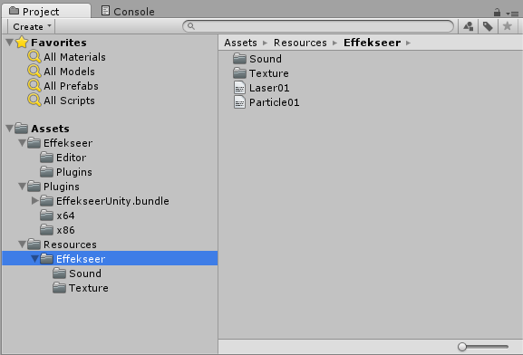
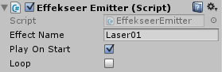

Unityとの連携
概要
ゲームエンジンUnityとの連携について説明します。
なお、Unity Technologies とこのツールは特に提携しているというわけではないため、
バージョンや状況によっては上手く動作しない可能性があります。
サンプル：GameEngine/Unity/SampleProject.zip
初めに
Effekseerの再生プログラムはC++で書かれているため、Unity上ではネイティブプラグイン扱いになります。
- Unity5：Personal版、Pro版どちらでも使用できます。
- Unity4：Pro版が必要です。
動作環境
- Windows Vista/7/8 (32bit,64bit) DirectX9, DirectX11
- Mac OS X 10.7以降
インストール方法
GameEngine/Unity/Effekseer.unitypackage を開いてUnityプロジェクトにインストールします。
リソースファイルについて
StreamingAssets/Effekseer/ 以下に出力済エフェクト(*.efk)やテクスチャ、サウンドを配置します。 
使い方
詳しくはサンプルを参照してください。
エミッタを使う方法
- Plugin/Effekseer/EffekseerEmitter.cs(コンポーネント)をゲームオブジェクトに追加します。
- インスペクタの「Effect Name」にはエフェクト名を指定します。
（エフェクト名はエフェクトファイル名から拡張子を除いた文字列です） - 「Play On Start」にチェックを入れると、ゲーム開始時に自動的に再生します。

直接再生する方法
スクリプトからエフェクトを直接再生するには、以下のスクリプトを書きます。
EffekseerHandle handle = Effekseer.PlayEffect("Laser01", transform.position);
handle.SetRotation(transform.rotation);
既知の不具合
- Macでは、Forward、Legacy Deferredの描画設定のみ正しく動作します。Unity側の不具合である可能性も含め原因を調査中です。
Todo
- iOS, Android対応
- パッケージ化対応